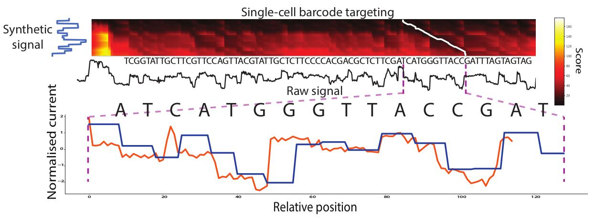

MotifSeq
Background
MotifSeq, the ctrl+f for signal, identifies raw signal traces that correspond to a given nucleotide sequence, such as an adapter, barcode or motif of interest. MotifSeq takes a query nucleotide sequence as input, converts it to a normalised signal trace using Scrappie, then performs a signal-level local alignment using a dynamic programming algorithm. MotifSeq outputs the location of a matching target in the raw signal with an associated distance value.

Getting Started
MotifSeq requires an input signal, either extracted from another read, or by using something such as Scrappie.
Use the built in visualisation -v for help in parameter tuning.
Instructions for use
Nanopore adapter identification
Building an adapter model:
scrappie squiggle adapter.fa > adapter.model
Identify stalls in signal using segmenter:
python segmenter.py -s signals.tsv.gz -ku -j 100 > signals_stall_segments.tsv
Identifying nanopore adapters in signal up stream of identified stalls:
python MotifSeq.py -s signals.tsv.gz --segs signals_stall_segments.tsv -a adapter.model > signals_adapters.tsv
Full usage
usage: MotifSeq.py [-h] [-f F5F | -p F5_PATH | -s SIGNAL] [-a ADAPT]
[-m MODELS] [--segs SEGS] [-b BAITS] [-t DTW_THRESH]
[-d MOTIF_DIST] [-v] [-scale_hi SCALE_HI]
[-scale_low SCALE_LOW]
MotifSeq - the Ctrl+f for signal. Signal-level local alignment of sequence
motifs.
optional arguments:
-h, --help show this help message and exit
-f F5F, --f5f F5F File list of fast5 paths
-p F5_PATH, --f5_path F5_PATH
Fast5 top dir
-s SIGNAL, --signal SIGNAL
Extracted signal file from SquigglePull
-a ADAPT, --adapt ADAPT
Adapter model file
-m MODELS, --models MODELS
Barcode models file
--segs SEGS segmenter file
-b BAITS, --baits BAITS
signal bait file
-t DTW_THRESH, --dtw_thresh DTW_THRESH
DTW distance threshold for match
-d MOTIF_DIST, --motif_dist MOTIF_DIST
max distance of adapter from start of signal
-v, --view view each output
-scale_hi SCALE_HI, --scale_hi SCALE_HI
Upper limit for signal outlier scaling
-scale_low SCALE_LOW, --scale_low SCALE_LOW
Lower limit for signal outlier scaling